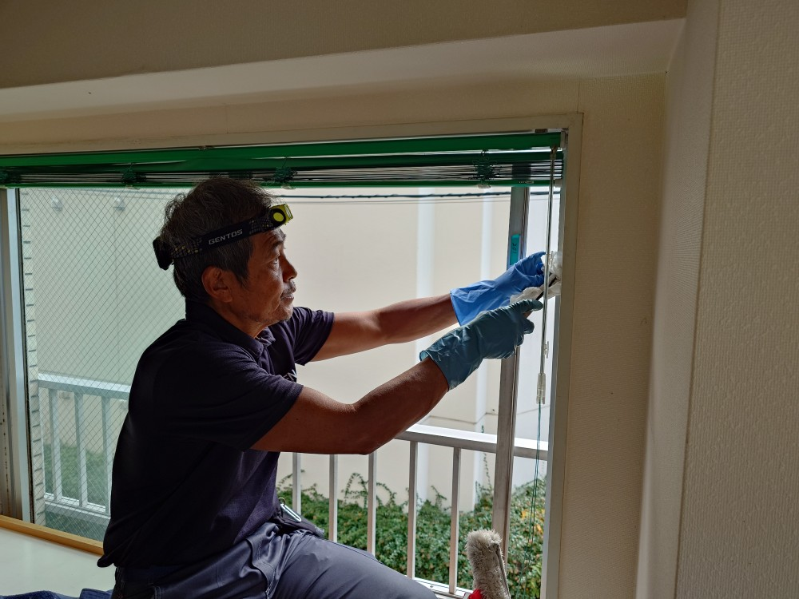
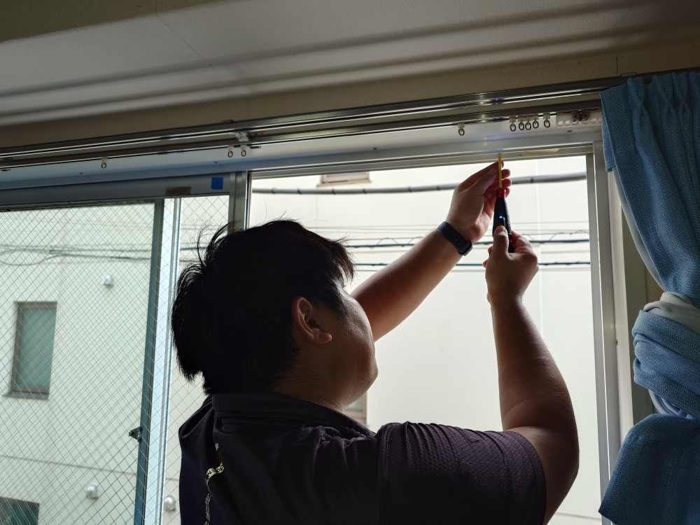
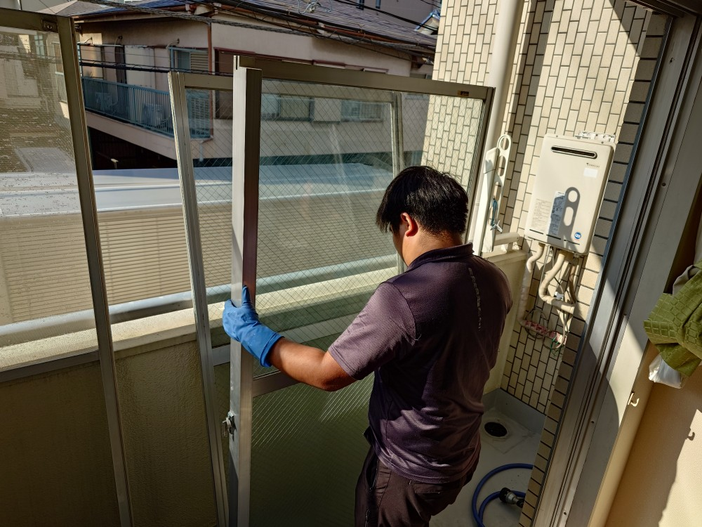
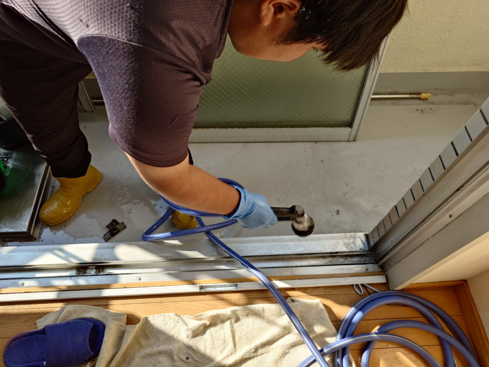
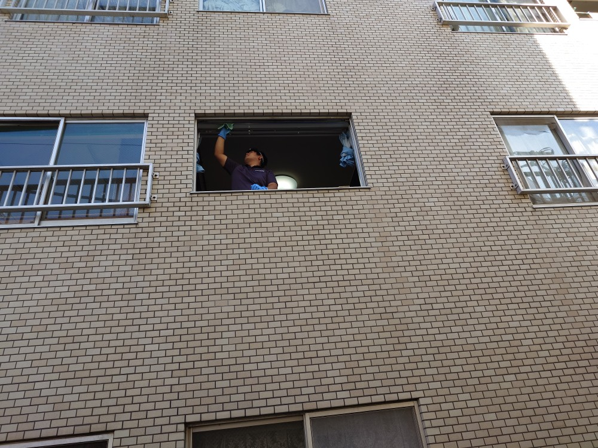
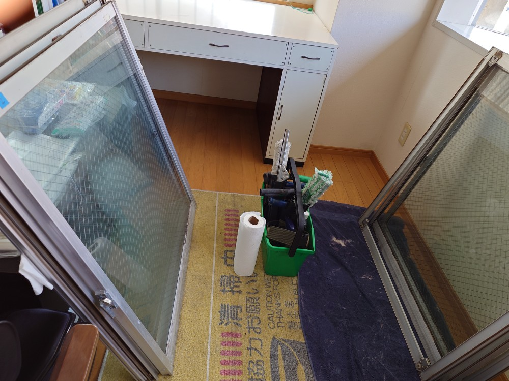
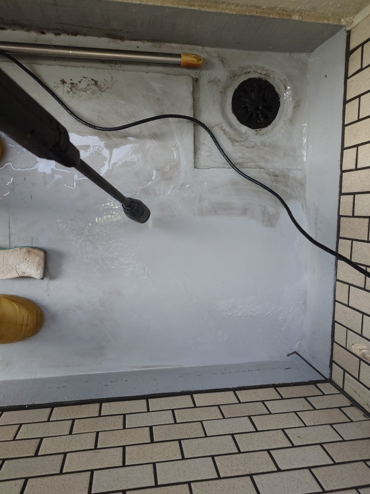
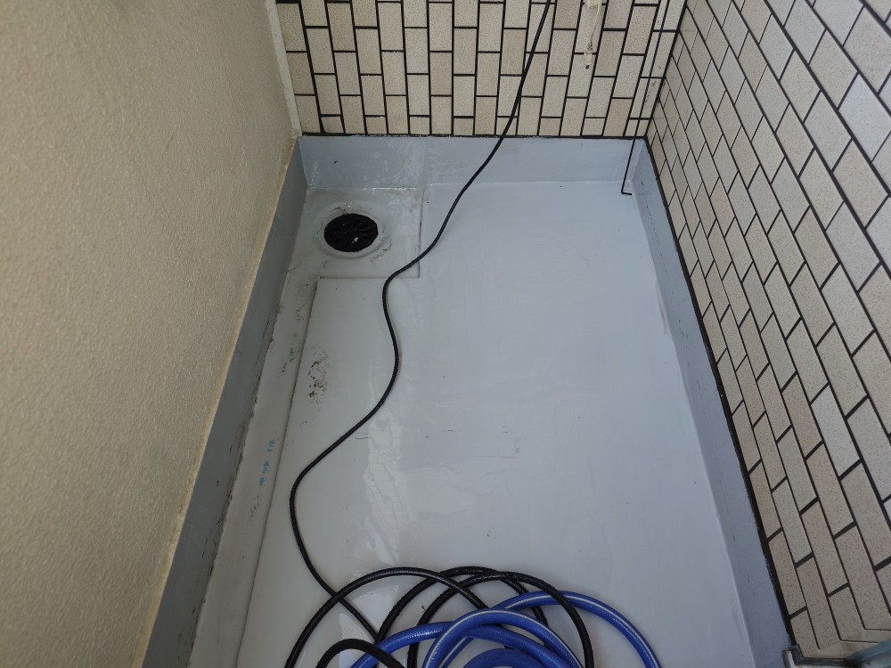
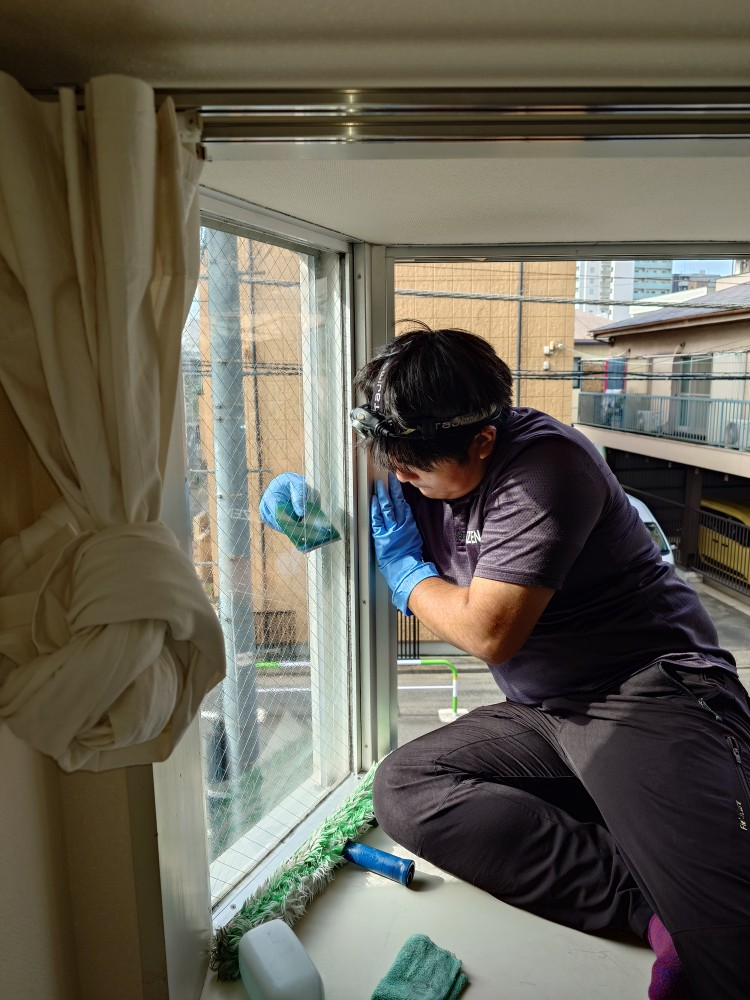

板橋区のi様マンションの窓・サッシ・網戸とベランダ高圧洗浄クリーニングをしました!

板橋区のi様マンションの窓・サッシ・網戸とベランダ高圧洗浄クリーニングを実施しました。I様のマンション窓・サッシ・網戸とベランダはしばらく堆積汚れが有り、この年末大掃除で一気に綺麗にクリーニングする事になりました。窓枠とシリコンコーキング枠、サッシ全般にカビ汚れが付着しており、カビ除去除菌洗浄にかなりの時間と工数を掛けて、DAIZENプロフェッショナルメソッドに則り、可能な限り綺麗に仕上げました。ベランダも同様に、堆積汚れが付着しておりましたので、メラニンと高圧洗浄を駆使して可能な限り綺麗に仕上げました。約6時間掛けてすっかり綺麗な窓・サッシ・網戸・ベランダが完成しました！ぜひDAIZENプロフェッショナルメソッドをお試し下さい！







